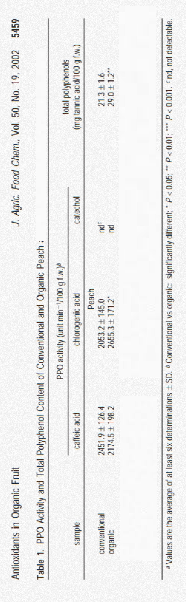

És millor el préssec ecològic o convencional?
He buscat a Google acadèmic
He trobat un article escrit per Marina Carbonaro et al. (2002) que analitza si hi ha diferència entre el préssec convencional i el préssec ecològic pel que fa el contingut de nutrients. He buscat a l'apartat de resultats, poso les imatges de les taules a continuació:
-

A la taula de dalt, podem observar l'anàlisis de l'activitat PPO (polifenoloxidasa) i el contingut total de polifenols en els préssecs. Pel que fa a l'àcid cafeic, els préssecs convencionals tenen una activitat lleugerament superior de PPO, tot que no és molt significativa. D'altre banda, en l'àcid clorogènic, podem observar que els préssecs orgànics mostren una activitat d PPO més alta que els convencionals. En el cas dels catecols, no es va detectar (nd) en cap de les moestres que es va fer en els préssecs. Quan observem el contingut total de polifenols (mg àcid tànic/100 g f.w), podem veure que els présecs orgànics tenen un valor més elevat que els convencionals, amb una diferència de P<0.05. Aquest major contingut de polifenols esta relacionat amb un augment del potencial antioxidant, per tant, ens està demostrant que els préssecs orgànics són millor que els convencionals, ja uqe els polifenols són uns compostos naturals que es troben als aliments i tene uns efectes molts beneficiosos per a la salut i el seu potencial en la prevenció de malalties.

A la imatge de dalt, es pot observar una altra taula que demostra que es prèssecs orgànics són millors que els convencionals. Aquesta, compara un préssec convencional amb tres orgànics (A, B i C). Encara que observem que els préssecs orgànics B i C tenen menys àcid cefeic i àcid clorogènic, es pot obervar que els orgànics continuen sent millor que els convencionals, ja que el préssec orgànic A conté més àcid cafeic i àcid clorogènic que el préssec convencinal. Com hem dit abans, quan més àccid té un préssec, vol dir que té major quantitat d'oxidació de polifenols, i com, això porta efectes beneficiosos per a la salut és millor. L'àcid cafeic és un compost ogànic que pertanya a la família dels polfenols, concretamnet els àcids hidroxicinàmics i té propietas antiinflamatòries. I l'àcid clorogènic és un altre tipus de polifenol, és conegut per les seves propietats antioxidants. Gràcies a aquestes dades, podem observar que els préssecs orgànics són millor que els convencionals.

En la imatge de dalt, hi ha una altra taula que ens demostra que els préssecs orgànics són millors que els convencionals. La taula demostra el contingut de polifenols mesurats en mg d'àcid tànic per 100g de pes fresc. A la taula podem veure que tots tres préssecs orgànics (A, B i C) contenen més quantitats de polifenols que el convencional, per tant, els préssecs orgànics són millors.